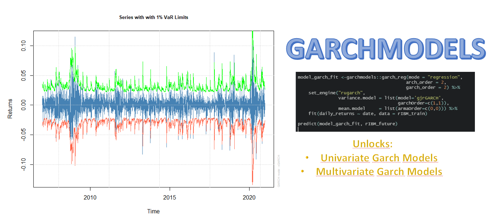

getting-started.Rmd
This tutorial shows you how you can start using garchmodels. The first thing to be clear about is that the package has two main functions:
garch_reg: This function implements the univariate models and currently its only engine is rugarch.
garch_multivariate_reg: This function implements the multivariate methods and connects to the rugarch and rmgarch packages. The engines you can currently connect to are the following: rugarch, dcc_rmgarch, c_rmgarch and gogarch_rmgarch.
First, we load the necessary packages:
The data we will use is IBM’s daily returns from March 2007 through December 2020. The data is contained in a tibble that comes with the garchmodels package itself.
rIBM
#> # A tibble: 3,523 x 2
#> date daily_returns
#> <date> <dbl>
#> 1 2007-01-03 0.000926
#> 2 2007-01-04 0.0107
#> 3 2007-01-05 -0.00905
#> 4 2007-01-08 0.0152
#> 5 2007-01-09 0.0118
#> 6 2007-01-10 -0.0118
#> 7 2007-01-11 -0.00243
#> 8 2007-01-12 0.00699
#> 9 2007-01-16 0.0149
#> 10 2007-01-17 -0.00793
#> # ... with 3,513 more rowsWe will extend the dataset to a 3-day horizon forecast and separate the dataset into train and future dataset.
rIBM_extended <- rIBM %>%
future_frame(.length_out = 3, .bind_data = TRUE)
rIBM_train <- rIBM_extended %>% drop_na()
rIBM_future <- rIBM_extended %>% filter(is.na(daily_returns))Next, we create the GARCH model for the variance:
model_fit_garch <-garchmodels::garch_reg(mode = "regression",
arch_order = 1,
garch_order = 1,
ma_order = 0,
ar_order = 0) %>%
set_engine("rugarch", mean.model = list(include.mean = FALSE)) %>%
fit(daily_returns ~ date, data = rIBM_train)We will graphically represent the Series with 1% VaR Limits and the Conditional SD (vs |returns|):
plot(model_fit_garch$fit$models$model_1, which = 2)
#>
#> please wait...calculating quantiles...
plot(model_fit_garch$fit$models$model_1, which = 3)Let us now predict about the future dataset:
predict(model_fit_garch, rIBM_future)
#> # A tibble: 3 x 1
#> .pred
#> <dbl>
#> 1 0
#> 2 0
#> 3 0We will now create a combined model using a GARCH model for the variance and an ARMA model for the mean:
model_fit_garch <-garchmodels::garch_reg(mode = "regression",
arch_order = 1,
garch_order = 1,
ma_order = 2,
ar_order = 2) %>%
set_engine("rugarch") %>%
fit(daily_returns ~ date, data = rIBM_train)Let’s again represent the Series with 1% VaR Limits and the Conditional SD (vs |returns|):
plot(model_fit_garch$fit$models$model_1, which = 2)
#>
#> please wait...calculating quantiles...
plot(model_fit_garch$fit$models$model_1, which = 3)Let us now predict about the future dataset:
predict(model_fit_garch, rIBM_future)
#> # A tibble: 3 x 1
#> .pred
#> <dbl>
#> 1 0.00147
#> 2 -0.000101
#> 3 -0.000608For this section, we will work with the daily returns of IBM, Google and BP from 2007 to 2020. To work with multivariate models, the input format should be like this table:
rX_longer
#> # A tibble: 8,550 x 3
#> id value date
#> <chr> <dbl> <date>
#> 1 rIBM 0.000926 2007-01-03
#> 2 rBP -0.0192 2007-01-03
#> 3 rGOOG 0.00341 2007-01-03
#> 4 rIBM 0.0107 2007-01-04
#> 5 rBP -0.0132 2007-01-04
#> 6 rGOOG 0.0335 2007-01-04
#> 7 rIBM -0.00905 2007-01-05
#> 8 rBP -0.00215 2007-01-05
#> 9 rGOOG 0.00813 2007-01-05
#> 10 rIBM 0.0152 2007-01-08
#> # ... with 8,540 more rowsWe will extend the dataset to a 3-day horizon forecast and separate the dataset into train and future dataset.
rX_longer_extended <- rX_longer %>%
group_by(id) %>%
future_frame(.length_out = 3, .bind_data = TRUE) %>%
ungroup()
rX_train <- rX_longer_extended %>% drop_na()
rX_future <- rX_longer_extended %>% filter(is.na(value))To create a model with the rugarch engine, the first thing to do is to specify in a list called “specs” through set_engine the specifications of the models. It is also important to note that the formula should always be the return against the date variable followed by the id variable. For more information see ?garch_multivariate_reg.
model_fit <- garch_multivariate_reg(mode = "regression", type = "ugarchspec") %>%
set_engine("rugarch" , specs = list(spec1 = list(mean.model = list(armaOrder = c(1,0))),
spec2 = list(mean.model = list(armaOrder = c(1,0))),
spec3 = list(mean.model = list(armaOrder = c(1,0)))),
) %>%
fit(value ~ date + id, data = rX_train)We now predict on the future dataset:
predict(model_fit, rX_future)
#> # A tibble: 18 x 4
#> .pred_name .pred_value .pred_date$date .pred_.name
#> <chr> <dbl> <date> <chr>
#> 1 rIBM 0.000369 2018-04-28 Series
#> 2 rBP 0.000473 2018-04-28 Series
#> 3 rGOOG 0.000750 2018-04-28 Series
#> 4 rIBM 0.000342 2018-04-29 Series
#> 5 rBP 0.000465 2018-04-29 Series
#> 6 rGOOG 0.000851 2018-04-29 Series
#> 7 rIBM 0.000342 2018-04-30 Series
#> 8 rBP 0.000465 2018-04-30 Series
#> 9 rGOOG 0.000852 2018-04-30 Series
#> 10 rIBM 0.0164 2018-04-28 Sigma
#> 11 rBP 0.0133 2018-04-28 Sigma
#> 12 rGOOG 0.0195 2018-04-28 Sigma
#> 13 rIBM 0.0162 2018-04-29 Sigma
#> 14 rBP 0.0134 2018-04-29 Sigma
#> 15 rGOOG 0.0196 2018-04-29 Sigma
#> 16 rIBM 0.0160 2018-04-30 Sigma
#> 17 rBP 0.0135 2018-04-30 Sigma
#> 18 rGOOG 0.0196 2018-04-30 SigmaTo create a model with the dcc_rmgarch engine, the first thing to do is to specify in a list called specs through set_engine the specifications of the models. You can also specify the arguments to be passed to rmgarch::dccspec() through the dcc_specs list as seen in the following example:
model_fit <- garch_multivariate_reg(type = "ugarchspec") %>%
set_engine("dcc_rmgarch" , specs = list(spec1 = list(mean.model = list(armaOrder = c(1,0))),
spec2 = list(mean.model = list(armaOrder = c(1,0))),
spec3 = list(mean.model = list(armaOrder = c(1,0)))),
dcc_specs = list(dccOrder = c(2,2), distribution = "mvlaplace")) %>%
fit(value ~ date + id, data = rX_train)Let’s visualize the graphics available through the model:
plot(model_fit$fit$models$model_1, which = 1)
plot(model_fit$fit$models$model_1, which = 2)
plot(model_fit$fit$models$model_1, which = 3)
plot(model_fit$fit$models$model_1, which = 4)
plot(model_fit$fit$models$model_1, which = 5)We now predict on the future dataset:
predictions <- predict(model_fit, rX_future)As you can see, the results are returned in a nested tibble. For example, if you want to get the correlation matrices:
predictions %>% filter(.name == "R") %>% pull(.pred)
#> $R
#> $R[[1]]
#> , , 1
#>
#> [,1] [,2] [,3]
#> [1,] 1.0000000 0.2245499 0.4009276
#> [2,] 0.2245499 1.0000000 0.3023550
#> [3,] 0.4009276 0.3023550 1.0000000
#>
#> , , 2
#>
#> [,1] [,2] [,3]
#> [1,] 1.0000000 0.2363791 0.3991591
#> [2,] 0.2363791 1.0000000 0.3032042
#> [3,] 0.3991591 0.3032042 1.0000000
#>
#> , , 3
#>
#> [,1] [,2] [,3]
#> [1,] 1.0000000 0.2472140 0.3975391
#> [2,] 0.2472140 1.0000000 0.3039821
#> [3,] 0.3975391 0.3039821 1.0000000To create a model with the c_rmgarch engine, the first thing to do is to specify in a list called specs through set_engine the specifications of the models. You can also specify the arguments to be passed to rmgarch::cgarchspec() through the c_specs list as seen in the following example:
model_fit <- garch_multivariate_reg(type = "ugarchspec") %>%
set_engine("c_rmgarch" , specs = list(spec1 = list(mean.model = list(armaOrder = c(1,0))),
spec2 = list(mean.model = list(armaOrder = c(1,0))),
spec3 = list(mean.model = list(armaOrder = c(1,0)))),
c_specs = list(dccOrder = c(2,2))) %>%
fit(value ~ date + id, data = rX_train)
model_fit
#> parsnip model object
#>
#> Fit time: 2.7s
#> Copula GARCH Multivariate Model
#> $model_1
#>
#> *-------------------------------------------------*
#> * Copula GARCH Fit *
#> *-------------------------------------------------*
#>
#> Distribution : mvnorm
#> No. of Parameters : 15
#> [VAR GARCH CC] : [0+15+0]
#> No. of Series : 3
#> No. of Observations : 2850
#> Log-Likelihood : 24354.45
#> Av.Log-Likelihood : 8.545
#>
#> Optimal Parameters
#> ---------------------------------------------------
#> Estimate Std. Error t value Pr(>|t|)
#> [rIBM].mu 0.000342 0.000243 1.407912 0.159157
#> [rIBM].ar1 -0.013463 0.021468 -0.627106 0.530590
#> [rIBM].omega 0.000015 0.000020 0.768999 0.441894
#> [rIBM].alpha1 0.111158 0.094421 1.177258 0.239093
#> [rIBM].beta1 0.809517 0.129092 6.270842 0.000000
#> [rBP].mu 0.000465 0.000278 1.671176 0.094687
#> [rBP].ar1 -0.000551 0.020888 -0.026386 0.978950
#> [rBP].omega 0.000005 0.000009 0.575227 0.565138
#> [rBP].alpha1 0.080660 0.014273 5.651338 0.000000
#> [rBP].beta1 0.902935 0.026253 34.393855 0.000000
#> [rGOOG].mu 0.000852 0.000307 2.771785 0.005575
#> [rGOOG].ar1 0.009763 0.022858 0.427108 0.669301
#> [rGOOG].omega 0.000010 0.000002 6.681005 0.000000
#> [rGOOG].alpha1 0.087500 0.016032 5.457858 0.000000
#> [rGOOG].beta1 0.887105 0.014877 59.629962 0.000000
#>
#> Information Criteria
#> ---------------------
#>
#> Akaike -17.080
#> Bayes -17.049
#> Shibata -17.080
#> Hannan-Quinn -17.069
#>
#>
#> Elapsed time : 1.056781To create a model with the gogarch_rmgarch engine, you can specify the arguments to be passed to rmgarch::gogarchspec() through the gogarch_specs list. You can also specify other arguments that will be passed to rmgarch::gogarchfit():
model_fit <- garch_multivariate_reg(type = "ugarchspec") %>%
set_engine("gogarch_rmgarch" , gogarch_specs = list(variance.model = list(garchOrder = c(2,2)))) %>%
fit(value ~ date + id, data = rX_train)We now predict on the future dataset:
predictions <- predict(model_fit, rX_future)
predictions
#> # A tibble: 11 x 2
#> .name .pred
#> <chr> <named list>
#> 1 factor.sigmas <dbl[,3,1] [3 x 3 x 1]>
#> 2 mu <dbl[,3,1] [3 x 3 x 1]>
#> 3 A <dbl[,3] [3 x 3]>
#> 4 Y <dbl[,3] [2,850 x 3]>
#> 5 W <dbl[,3] [3 x 3]>
#> 6 K <dbl[,3] [3 x 3]>
#> 7 Kinv <dbl[,3] [3 x 3]>
#> 8 U <dbl[,3] [3 x 3]>
#> 9 arcoef <dbl[,3] [2 x 3]>
#> 10 garchcoef <dbl[,3] [5 x 3]>
#> 11 timer <drtn [1]>Let’s look at the GARCH model coefficients:
predictions %>% filter(.name == "garchcoef") %>% pull(.pred)
#> $garchcoef
#> [,1] [,2] [,3]
#> omega 1.203914e-01 0.02727819 1.128403e-01
#> alpha1 2.488378e-01 0.04707957 9.847686e-02
#> alpha2 9.814023e-14 0.09979280 6.129336e-10
#> beta1 2.762825e-01 0.11460042 3.279989e-01
#> beta2 4.003020e-01 0.70724997 4.634035e-01